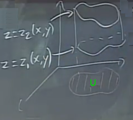

[onceki ders tekrari atlandi]
Uzaklaşım teorisinin ispatına gelelim. Bu ispatın daha kolay versiyonunu yapacağım şimdi, tüm eşitlik yerine
$$ \int \oint_S < 0,0,R > \cdot \hat{n} \mathrm{d} S = \iiint_D R_z \mathrm{d} V $$
eşitliğinin ispatını yapacağım. Buradan hareketle daha genel eşitliği ispatlamak kolay, aynı ispatı sadece $x$, sadece $y$ bileşeni olan vektör alanları için tekrarlarım, ve tüm bunları toplayınca ana eşitliği elde etmiş olurum.
İkinci bir basitleştirme yapalım, çünkü ispatı hala herhangi bir yüzey için yapabileceğimden emin değilim. Dikey, basit bir yüzey kullanacağım, öyle ki bu yüzey üzerinden entegralde $z$ değişkenin sınırlarını kolay halledebileyim.
